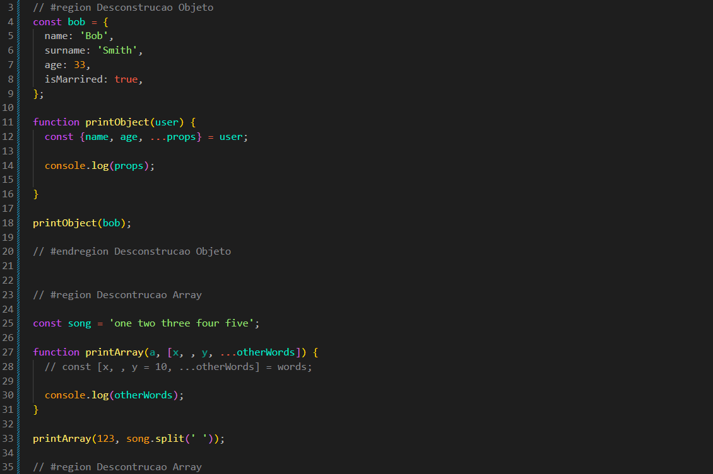
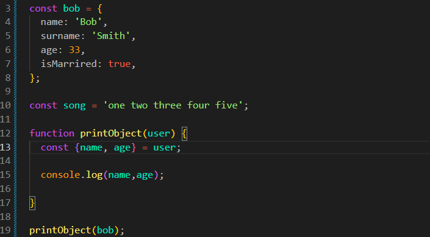
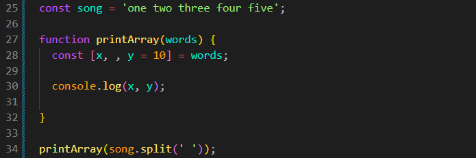
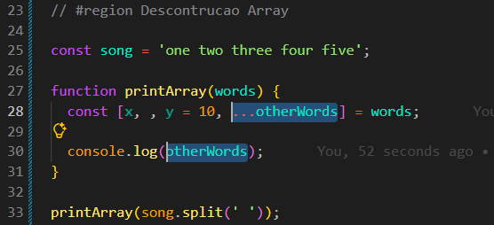

Array Destructuring
Introdução
Aqui iremos ver como funciona a desestruturação de arrays.
Aqui iremos ver como funciona a desestruturação de arrays.
JS:

Um exemplo pode ser: se tivermos um objeto e desejarmos obter informações específicas dele, podemos fazer da seguinte forma:
const bob = {
name: 'bob',
surname: 'Smith',
age: 33,
isMarried: true,
};
function printObject(user) {
const { name, age } = user;
console.log(name, age);
}
printObject(bob);

Também podemos dar outro nome à variável que recebe uma propriedade. Por exemplo:
function printObject(user) {
const { name, age: x, y = 10 } = user;
console.log(name, x);
}
Dessa forma, estamos fazendo duas coisas: a propriedade age continua sendo chamada age no objeto, mas seu valor será armazenado na variável x.
Já y = 10 define um valor padrão. Caso o objeto não possua a propriedade y, a variável y receberá o valor 10.
Essa é uma forma de utilizar a desestruturação de objetos.
Caso desejemos obter todas as demais propriedades, podemos utilizar o operador rest (...) da seguinte forma:
function printObject(user) {
const { name, age, ...props } = user;
console.log(props);
}
Dessa forma, props receberá um novo objeto contendo as demais propriedades, exceto name e age.
Também podemos fazer a desestruturação de um array. A sintaxe é parecida com a utilizada nos objetos, mas nos arrays os valores são obtidos de acordo com suas posições.
const song = 'one two three four five';
function printArray(words) {
const [x, , y = 10] = words;
console.log(x, y);
}
printArray(song.split(' '));

Dessa forma, teremos como resultado one three. A primeira posição do array é atribuída a x. A segunda posição é ignorada por causa da vírgula. A terceira posição é atribuída a y.
O y = 10 define um valor padrão. Se a terceira posição não possuir um valor, y receberá 10.
Assim como utilizamos o operador rest (...) com objetos, também podemos utilizá-lo com arrays.
function printArray(words) {
const [x, , y = 10, ...otherWords] = words;
console.log(otherWords);
}

Dessa forma, otherWords receberá todos os elementos restantes do array depois das posições utilizadas por x, pela posição ignorada e por y.
A desestruturação também pode ser feita diretamente no parâmetro da função. Por exemplo:
function printArray([x, , y, ...otherWords]) {
console.log(otherWords);
}
printArray(song.split(' '));
Nesse caso, o parâmetro da função já recebe o array e realiza a desestruturação diretamente.
Também podemos adicionar outros parâmetros normalmente. Por exemplo:
function printArray(a, [x, , y, ...otherWords]) {
console.log(a);
console.log(otherWords);
}
printArray(123, song.split(' '));
Nesse exemplo, a recebe o valor 123, enquanto o segundo argumento é desestruturado diretamente no parâmetro da função.